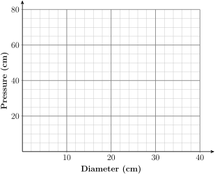

Chapter 6 Powers and Roots

We next turn our attention to a large and useful family of functions, called power functions. Here is an example of a power function with fractional exponents.
In 1932, Max Kleiber published a remarkable equation for the metabolic rate of an animal as a function of its mass. The table at right shows the mass of various animals in kilograms and their metabolic rates, in kilocalories per day. A plot of the data, resulting in the famous “mouse-to-elephant” curve, is shown in the figure.
| Animal | Mass (kg) | Metabolic rate (kcal/day) |
| Mouse | \(0.02\) | \(3.4\) |
| Rat | \(0.2\) | \(28\) |
| Guinea pig | \(0.8\) | \(48\) |
| Cat | \(3.0\) | \(150\) |
| Rabbit | \(3.5\) | \(165\) |
| Dog | \(15.5\) | \(520\) |
| Chimpanzee | \(38\) | \(1110\) |
| Sheep | \(50\) | \(1300\) |
| Human | \(65\) | \(1660\) |
| Pig | \(250\) | \(4350\) |
| Cow | \(400\) | \(6080\) |
| Polar bear | \(600\) | \(8340\) |
| Elephant | \(3670\) | \(48,800\) |
Kleiber modeled his data by the power function
where \(P\) is the metabolic rate and \(m\) is the mass of the animal. Kleiber's rule initiated the use of allometric equations, or power functions of mass, in physiology.
Investigation 6.1. Inflating a Balloon.
If you blow air into a balloon, what do you think will happen to the air pressure inside the balloon as it expands? Here is what two physics books have to say:
“The greater the pressure inside, the greater the balloon’s volume.” Jay Boleman, Physics, a Window on Our World
“Contrary to the process of blowing up a toy balloon, the pressure required to force air into a bubble decreases with bubble size.” Francis Sears, Mechanics, Heat, and Sound
On the basis of these two quotations and your own intuition, sketch a graph of pressure as a function of the diameter of the balloon. Describe your graph: Is it increasing or decreasing? Is it concave up (bending upward) or concave down (bending downward)?
-
Two high school students, April Leonardo and Tolu Noah, decided to see for themselves how the pressure inside a balloon changes as the balloon expands. Using a column of water to measure pressure, they collected the following data while blowing up a balloon. Graph their data on the grid below.
Diameter
(cm)Pressure
(cm \(\text{H}_2\)O)\(5.7\) \(60.6\) \(7.3\) \(57.2\) \(8.2\) \(47.9\) \(10.7\) \(38.1\) \(12\) \(37.1\) \(14.6\) \(31.9\) \(17.5\) \(28.1\) \(20.5\) \(26.4\) \(23.5\) \(28\) \(25.2\) \(31.4\) \(26.1\) \(34\) \(27.5\) \(37.2\) \(28.4\) \(37.9\) \(29\) \(40.7\) \(30\) \(43.3\) \(30.6\) \(46.6\) \(31.3\) \(50\) \(32.2\) \(61.9\)  Describe the graph of April and Tolu’s data. Does the graph confirm the predictions of the physics books?
-
As the diameter of the balloon increases from 5 cm to 20 cm, the pressure inside decreases. Can we find a function that describes this portion of the graph? Here is some information:
Pressure is the force per unit area exerted by the balloon on the air inside, or \(P=\dfrac{F}{A}\text{.}\)
The balloon is spherical, so its surface area, \(A\text{,}\) is given by \(A=\pi d^2\).
Because the force increases as the balloon expands, we will try a power function of the form \(F=kd^p\text{,}\) where \(k\) and \(p\) are constants, to see if it fits the data. Combine the three equations, \(P=\dfrac{F}{A},~A=\pi d^2~\text{,}\) and \(~F=kd^p\text{,}\) to express \(P\) as a power function of \(d\text{.}\)
Graph the function \(P=211 d^{-0.7}\) on the same grid with the data. Do the data support the hypothesis that \(P\) is a power function of \(d\text{?}\)
What is the value of the exponent \(p\) in \(~F=kd^p\text{?}\)